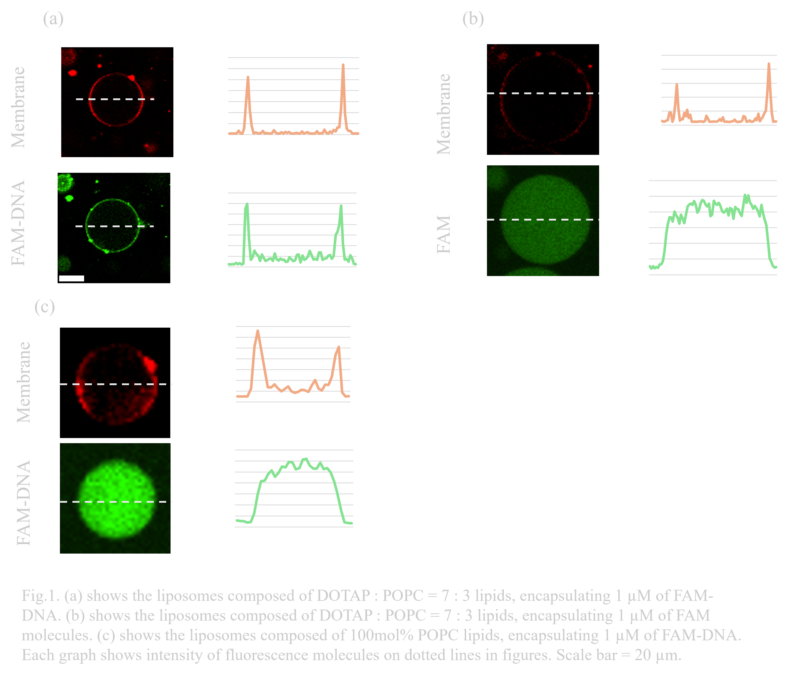
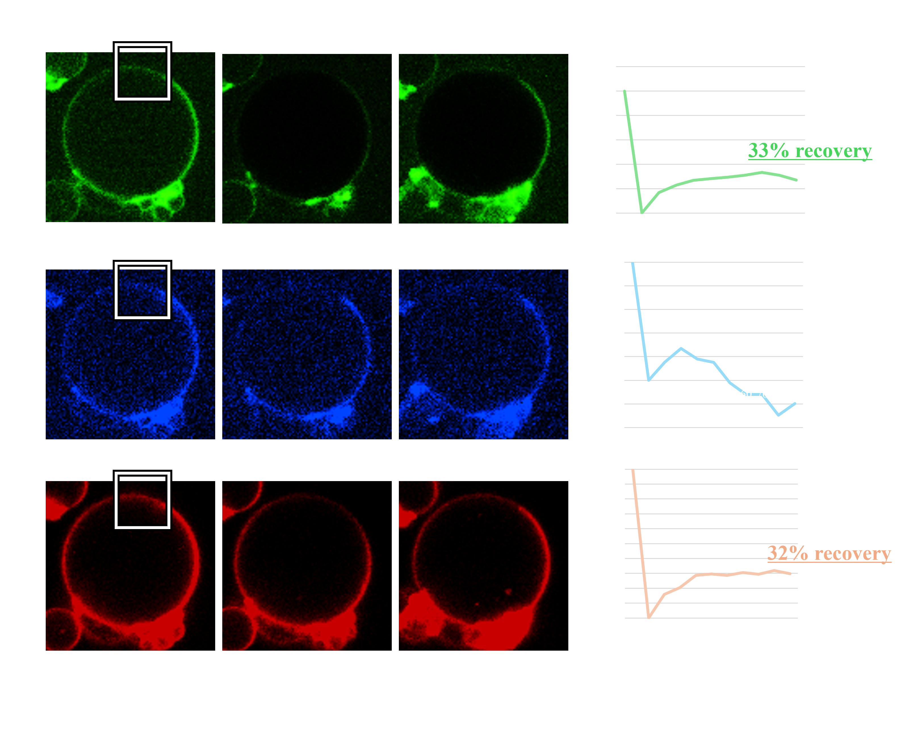

Experiment
Main Results
- The BDB structure was constructed.
- The designed DNA hydrogel was confirmed to have formed.
- The BGB structure was successfully constructed.
- It was demonstrated that the BGB structure is stronger than liposomes.
- Pores were opened in the BGB structure.
BGB structures
As described in the design section, BGB structures are expected to enhance the robustness of liposomes. To advance applications for future drug development, we established an experimental system that encompasses the fabrication of a three-layer structure, as well as purification and stability evaluation of the products. In the first half of this section, we introduce and evaluate the products obtained during the preparatory stage for BGB structure formation. In the second half, we validate the formation of the structure and evaluate its stability.Additionally, we report the successful recovery of this structure with a collection rate of over 95%.
〇The products prepared for the formation of the three-layer structure
- Preparation and evaluation of the DNA hydrogel
We evaluated the ability of designed Y motifs to form DNA dimers and DNA hydrogels in tubes. First, the formation of DNA monomers, DNA dimers, and DNA hydrogels under a general buffer condition (1xTAE, 15 mM MgCl2) was evaluated using 10% polyacrylamide gel electrophoresis (PAGE). The result showed that all structural bands shifted upward compared to the single component stand, and the stack in the gel well was observed in the gel sample. This result indicates that DNA monomer, DNA dimer structures and the hydrogel formed as we expected (Fig. 1). The band of the dimer is smeared, probably because the length of the sticky end is 8 bases, thus the binding and dissociation of the DNA dimer were repeated during the electrophoresis
Next, we evaluated the formation of DNA dimers and DNA hydrogels under aqueous phase conditions between BGB bilayers (1× TAE, 15 mM MgCl2, 50 mM KCl, 300 mM glucose). The PAGE results showed that the band of DNA dimers and DNA hydrogels prepared in both buffer conditions appeared in the same position. However, the formation of DNA dimers and DNA hydrogels may not be correctly confirmed because the bands were snare, probably due to the affection of KCl and glucose (Fig. 2A). To avoid this, the samples were evaluated in agarose gel electrophoresis. Agarose gel electrophoresis provided non-snare bands of each sample. Moreover, the DNA dimer lane showed bands at 100-200 bp , and the DNA hydrogel samples stacked in the wells, which were the same as PAGE results. This result indicates that DNA dimers and DNA hydrogels are also constructed under aqueous phase conditions between BGB bilayers (Fig. 2B).

As described in the design section, the process of re-hybridization is necessary to prevent aggregation of BGB structures by the exposure of sticky ends of DNA hydrogel. The demonstration of the re-hybridization with DNA dimers and DNA hydrogels was evaluated by PAGE. PAGE results showed that as the highest temperature during annealing increased, the band brightness of the DNA hydrogel around the wells decreased and new bands formed around the dimers, 200 bp to 500 bp. This result suggests that the re-hybridization of the DNA dimer with the DNA hydrogel forms a new multimer that does not have sticky ends, and the ratio of DNA hydrogel is reduced (Fig. 3A). The agarose gel electrophoresis was also conducted for these samples. The agarose gel electrophoresis results showed an increase in the brightness of the bands at the bottom of the 50°C and 60°C lanes compared to the 40°C lane. This result suggests that re-hybridization of the DNA dimer with the DNA hydrogel occurred as we expected. (Fig. 3B). Based on these results, we determined the highest temperature for re-hybridization in the BGB to be 50°C.

- Development of the positive charged liposomes and evaluate the interaction with DNA
The designed three-layer structure is formed by the electrostatic interaction between the membrane and DNA. To induce the interaction, liposomes containing a 30 mol% ratio of DOTAP, a positively charged phospholipid, were prepared. To confirm the electrostatic interaction, FAM-modified single-stranded DNA strands added to the inner solution of liposomes were observed using a confocal microscope. Rhodamine PE (Rhod-PE) was mixed at a concentration of 0.67 mg/ L, and FAM-DNA (1 µM) was encapsulated to observe the lipid membranes and DNA, respectively. FAM-DNA was observed at the same position as the membrane, while FAM molecules added as control were not. This indicates the interaction between liposomes and DNA contributed to binding both molecules. (Fig.1.a,b)In contrast, DNA-FAM was observed to spread evenly throughout the inner fluid in membranes without DOTAP. (Fig.1.c) These results prove the contribution of DOTAP in attaching DNA due to the electrostatic interaction.
- BG structure-forming and evaluation of the “Gel-coating method” for preventing liposome aggregation
As the next step in obtaining BGB structures, BG structures—a complex composed of liposomes and DNA—need to be prepared. To form the desired three-layer structure, we must consider two phenomena: uneven gel formation on liposomes and aggregation between liposomes due to the sticky ends of DNA hydrogels. Uneven accumulation of the gel can cause irregularities on the membrane surface, interfering with electrostatic interactions. Moreover, liposomes can get trapped by hybridization of sticky ends between gels. The 'gel-coating method' was developed to address these issues during the preparation of BG structures. The detailed procedure is described in the design section. To observe the localization of DNA, AMCA-modified DNA was added at 100nM in DNA hydrogel.
After the annealing process for even gel formation on liposomes, AMCA-DNA was observed aligning neatly along the membrane, indicating reduced aggregation of DNA hydrogel on liposomes(Fig.2.a,b). In addition, after applying the gel-coating process with the one-sticky-end Y motif structure, a reduction in liposome aggregation was confirmed (Fig.2.b,c).
The rates of liposomes with evenly formed DNA hydrogel were 85% and 87.5% in annealed samples or gel coated samples(N=2)(Fig.2.d). Compared with the percentage in not annealed BG solution of 6.9%, the re-annealing process reduced aggregation of DNA hydrogel-bind liposomes over tentimes.To obtain a more detailed evaluation of the method, each sample was quantitatively observed. The 75% percentage of non-aggregated liposomes after gel-coated process shows highest rates of three samples, suggesting the efficiency for preventing aggregation of liposomes. However, in the non-annealing samples, the percentage of non-aggregated liposomes is 51.7%, while the annealed samples remained 15%(Fig.2.e). This result indicates that the higher concentration of liposomes causes the aggregation. Needing detailed verification, the same concentration of each sample must be prepared, though we did not conduct this for focusing on evaluation of stability of BGB structure rather than the effects of methods.

〇Evaluation of the three-layer structure and gel formation on a membrane
- Verification of the three-layer structure
To confirm and visualize the formation of the designed three-layer structure, NBD-PE, AMCA-DNA, and Rhod-PE, were applied to the inner membrane, gel layer, and outer membrane, respectively. Confocal microscopy observation revealed the overlapping of three types of fluorescence in the same circles. The fluorescence signals of AMCA and NBD-PE were weak, requiring stronger laser power and careful observation to observe the inner layers. To obtain more conclusive data, 1 µM calcein was added to the inner solution. This sample showed green fluorescence inside the membrane with the gel layer and outer membrane fluorescence.These results suggest the formation of the three-layer structure.
- Verification of the DNA hydrogel formation on a membrane
To evaluate whether the DNA hydrogel is certainly formed between the two membrane layers, we conducted FRAP experiment. If the DNA hydrogel is formed, the fluidity of the DNA hydrogel layer is expected to be lower than lipid membrane layers. The detailed methods are described in the materials and methods section. Fluorescence recovery was observed in all layers of BDB structures (Fig.3.a).
The existence of the fluidity of DNA layers is an expected result because they do not form the networks, just binding on membranes by electrostatic interactions. In contrast, fluorescence recovery on BGB layers was observed only in the two membrane layers, but not in the DNA-gel layer(Fig.3.b). The lower fluidity in the gel layer strongly supports the formation of the DNA hydrogel between the two membranes and successful construction of BGB structures.
〇Modification of a centrifugal sedimentation method for the effective encapsulation of outer membrane
To improve the yield of BGB structure formation, it is necessary to enhance the centrifugal sedimentation method. Conventional method, same as the formation of liposomes, was not effective to encapsulate the BG structure with outer membrane(Fig.4.a).
For the efficient encapsulation of the BG structures with the outer membrane, 100 mol% DOTAP was used on the membrane of BGB to enhance the electrostatic interaction between the lipids DNA hydrogel. Moreover, to prevent electrostatic interactions between obtained structures due to the positive charge of DOTAP, cholesterol and DOPC were added at a 4:3 mol% ratio for the outer leaflet of 2nd membrane of BGB.
After the modified centrifugation operation, an 97.3% yield of BGB structures was detected by confocal microscopy. Compared with the yield of BGB structures obtained by conventional centrifugal sedimentation (5.90%), an approximately 16.5-fold increase in purification efficiency was confirmed(Fig.4.b,c).
〇Stability test
In prior research, we succeeded in enhancing the stability of liposomes by lining the inside of the liposomes with DNA hydrogel (Ref). The BGB we developed has a three-layer structure: liposome (bilayer), DNA hydrogel (Gel), and liposome (bilayer), so it is expected to exhibit higher stability than liposomes. Therefore, in order to evaluate the stability of BGB, we confirmed the stability of BGB using five items: temperature, osmotic pressure (changes in salt concentration and sugar concentration), pH, long-term storage, and water.
In DNA hydrogel, the DNA Y motifs form a dense mesh structure by hydrogen bonding among themselves. Therefore, the DNA hydrogel layer is a relatively strong structure. In addition, BGB has electrostatic interactions between the DNA hydrogel layer and the lipid bilayer. Therefore, the lipid membrane forms a film of lipid bilayer on the DNAhydrogel surface. For these reasons, we consider that the ability of DNA hydrogel to retain the structure of the lipid bilayer is the reason for the high stability of the BGB.
- Temperature test
Considering frozen storage and DDS in the human body, it is necessary to demonstrate that the BGB is stable at body temperature or below freezing. When preparing the gel after forming the tube to form pores in the BGB, a process of heating to 40°C for rehybridization of the gel occurs. In addition, liposomes are stored frozen at a wide range of temperatures, from -5°C to -45°C, when frozen or lyophilized. In this experiment, the durability of the BGB was verified using a freezer at 40°C, which is the heating temperature for hybridization or near body temperature, and at -30°C, which is the experimental environment. First, the durability of the BGB and liposomes at the above temperatures was compared by observing them over time using a confocal microscope.
Under conditions left at -30°C for 3h, many liposomes collapsed (Fig. 1.(b)). On the other hand, more BGB remained than liposomes (Fig. 1.(a)).
Under conditions of 3h at 40°C, many liposomes collapsed (Fig. 2.(b)). On the other hand, BGB remained more than liposomes (Fig. 2.(a)).


- Osmotic pressure test
The liposome was backed by DNA hydrogel to improve its osmotic resistance and to create a stronger structure than liposome. The durability of BGB and liposome was compared when the salt concentration and sugar concentration of the external and internal solutions were changed. The sugar concentration was the same as that used in the previous study, sorbitol hypertonic solution.
When BGB and liposomes were exposed to 7.3x sorbitol hypertonic solution conditions, the number decreased in both cases as shown in Fig. 3.(a) and (b) As shown in Fig. 3.(a), more BGB remained.
When exposed to 5M sorbitol hypertonic solution conditions, BGB remained, although the percentage decreased. On the other hand, liposomes almost disappeared (Fig. 4.(b)).


- pH test
When considering an oral DDS (drug delivery system), the pH change that occurs when passing through the digestive tract is a major issue. In particular, gastric acid is highly acidic with a pH of 1, so high pH resistance is required to deliver the drug to its destination (Ref). Normally, the solution that constitutes the outer layer of a liposome has a pH of about 8, so it was unclear whether it could maintain stability in a low pH environment. Previous research has suggested that liposomes have a certain degree of durability, but DNA origami is known to have poor pH resistance (Ref). Therefore, when the behavioral changes of liposomes and BGB in a low pH environment were compared, it was confirmed that both BGB and liposomes have high pH resistance(Fig. 4.(a),(b)).

- pH FRAP test
To evaluate the ability of the BGB structure to block external stress on biomolecules within the gel layer due to its three-layer structure, we conducted a FRAP experiment on the BGB structure in a low pH (≈0.1) environment. In the FRAP experiment, the normalized intensity of both membrane layers showed an upward trend after laser irradiation, recovering more than 30% of the intensity. In contrast, the normalized intensity of the DNA hydrogel layer did not show an upward trend(Fig.x.). These results suggest that the gel network retains its structure in the low pH environment by forming BGB structures.
- long-term storage test
When transporting or storing drugs in remote areas, the preservation of the drug is very important. In a study in which drugs used in cosmetics were encapsulated in liposomes that had been carefully selected for their stability, it was reported that the encapsulated drug maintained approximately 80% of its initial retention efficiency even after 6 months at 40°C (Ref). This study showed that the key to long-term stability is that the lipids that make up the liposomes do not contain even a small amount of unsaturated moieties. However, the lipid components of the liposomes and BGB that we use, DOTAP (1,2-dioleoyl-3-trimethylammonium-propane) and POPC (1-palmitoyl-2-oleoyl-sn-glycero-3-phosphocholine), have the characteristics of saturated and unsaturated fatty acids in their respective structures. In addition, since the liposomes are not modified with cholesterol, it is thought that the same long-term stability cannot be expected. Therefore, to evaluate their long-term storage stability, the liposomes and BGB were each stored at 4°C, and although the storage period was short, their condition was observed after one week and three weeks using a confocal microscope to see if they had been destroyed.
After one week and three weeks of storage, BGB and liposomes retained their structure under both conditions (Fig. 6.(a),(b)). We consider that the short duration of the experiment (3 weeks) did not result in any difference between the liposome and BGB results. A more long-term storage could result in a significant difference.
- long term storage

- water test
Stability of liposomes and BGB when exposed to tap water and MQ, respectively, was examined. Although the number of trials in this experiment was small, it was confirmed that BGB was highly resistant to liposomes in both water and ultrapure water (MQ).
Under outer solution conditions containing 50% tap water, the majority of liposomes collapsed (Fig. 7.(b)). Under the condition of the outer solution containing 93% tap water, the liposomes almost disappeared. On the other hand, most of the liposomes remained under the condition of outer solution containing 50% BGB and tap water (Fig. 7.(a)). Under outer solution conditions containing 85% tap water, the percentage of BGB decreased significantly. Under outer solution conditions containing about 93% tap water, BGB remained, unlike liposomes.
Under outer solution conditions containing 50% MQ, both liposomes and BGB decreased (Fig. 8.(a),(b)). On the other hand, under the outer solution condition containing 75% MQ, liposomes almost disappeared, while BGB remained.


Tubulation
〇Structural evaluation of DNA origami by electrophoresis
We optimized MgCl2 concentration of tubulation DNA origami by agarose gel electrophoresis. The agarose gel electrophoresis showed that the monomer bands of tubulation DNA origami become lower as the increase of MgCl2 concentration. However, multimer and aggregation bands were also observed. The aggregation appeared at MgCl2 concentration above 12.5 mM. The MgCl2 concentration of the DNA origami in previous research to which we referred was 12 mM[1]. Thus we chose the MgCl2 concentration as 12.5 mM and conducted a purification process.
The electrophoresis analysis showed the monomer, multimer and some aggregation bands, suggesting that the structure requires purification collecting the targeted monomer.
We adopted gel extraction purification method for this structure. First, we annealed the structure for 50 μL with 20 nM scaffold and 100 nM of each staple DNA, respectively. Then the structure was separated by 1% agarose gel electrophoresis (Fig. 2a). We cut the band that is considered as the monomer structures (shown in the dotted line in Fig. Xa), then the structure was collected using Freeze ‘N Squeeze DNA extraction spin columns (BIO-RAD, Barclay, CA, USA). The unpurified and purified structure was evaluated by agarose gel electrophoresis (Fig. 2b). The collection of the structure from the cut gel was suggested by the appearance of the bands. However, some problems is also suggested from this result. The structural band place of unpurified structure for two lots and purified structure differs, suggesting the structural might differ for each sample. The unpurified sample of lot* and lot** was annealed with the volume of 5 μL and 50 μL, respectively. Some problem might have occurred in the annealing process. The separation electrophoresis was conducted with the running buffer containing 1xTAE, 5 mM MgCl2. Structural change in the lower MgCl2 conc. is possible to be the problem.
Optimization of the annealing and purification procedure was not complete during our BIOMOD project period. These must be achieved as future works of our project, tubulation of the membrane and pore formation on BGB structures.

〇re-designing of inner membrane and electrostatic shielding effect for the membrane fusion
The negatively charged liposomes prepared to accelerate membrane fusion can cause electronic repulsions against DNA strands. This repulsion is mitigated by electrostatic shielding with higher ion concentrations. When the KCl concentration was 0 mM in the inner solution containing 1 µM of the G1-Chol+G2+G3 Y-motif, the localization of the DNA hydrogel on the membrane was weak, while the localization improved when KCl concentration was increased to 50 mM (Fig. 5a). We then added 300 mM KCl to the outer solution and incubated the sample at room temperature for 15 minutes to form BG structures with negatively charged liposomes. DNA origami nanostructures were added to this sample solution at the final concentration of 5 nMThe successful formation of BG structures coated by Cholesterol-modified DNA hydrogel and DNA origami nanostructures was observed (Fig. 5b).
〇Influx assay for the validation of the pore formation
After preparing BGB structures using previously described BG structures, the BGB structures were incubated with 1 µM FAM molecules (φ ≈ 1 nm) and observed for 1 hour to evaluate pore formation. The influx of the FAM molecules inside BGB structures are expected to be observed with the pore-formed BGB structures
Compared to the influx percentage of 12.0% (N=1, n=217) in the control sample (normal BGB structures),the influx percentage in the BGB with DNA origami nanostructures was 43.0%, approximately 3.6 times higher (Fig. 5c). This significant difference suggests that pore formation may be due to the addition of DNA origami nanostructures in the gel layer. Further experiments and data are needed to evaluate and confirm the pore formation on BGB structures.
〇The limitation of the current experiment systems and plans for the future experiments
Although the influx of fluorescence molecules into the BGB structures was observed, we could not conclude that our designed nuclear-like pores were successfully formed. Aggregation of liposomes could have affected membrane profiles or formed some puncture that might lead to the influx of FAM molecules that was even observed in the control samples.The DNA origami nanostructures were not modified with any fluorescence molecules and the localization of DNA origami was not evaluated. Moreover, certain pore formation on BGB membranes should be evaluated by TEM observation.
The pore formation will be confirmed by overcoming these concerns.To obtain more detailed data on pore formation, we are planning to conduct electrical measurements [ref]. This method can exclude the unintended aggregation or membrane rupture that may cause the influx of fluorescence molecules in control conditions, and may provide insights into the role of DNA origami structures in pore formation.
Materials and Methods
〇Materials and reagents
All staple strands and linker-DNA strands were purchased from Integrated DNA Technologies (IDT, Iowa, USA). FAM-modified DNA strands were purchased from Eurofins Genomics (Ebersberg, Germany). Single-stranded M13mp18 viral DNA was purchased from Tilibit Nanosystems (Garching, Germany) via Eurofins. MgCl₂, glucose, sorbitol, and trehalose were purchased from Kishida Chemical (Osaka, Japan). FAM, Rhod PE, TAE, BSA, and heavy mineral oil were purchased from Sigma-Aldrich (Merck, Massachusetts, USA). NBD-PE and SYBR Gold were purchased from Thermo Fisher Scientific (California, USA). EDTA was purchased from Kanto Chemical (Tokyo, Japan), and KCl was purchased from Nakalai Tesque (Kyoto, Japan).
POPC was purchased from NOF Corporation (Tokyo, Japan), while POPG and DOTAP were purchased from Avanti Polar Lipids (Alabama, USA). Cholesterol was purchased from Fujifilm Wako Pure Chemical Corporation (Osaka, Japan). Ultrapure water (resistivity 18.2 MΩ·cm) was supplied from Direct-Q UV3 (Merck Millipore, Massachusetts, USA). AMCA-modified DNA was purchased from Sangon Biotech (Shanghai, China) to prepare BDB and Generay Biotech (Shanghai, China) to prepare BGB.
Click here to view the materials sheet→
〇Liposome Preparation
A lipid mixture in chloroform was prepared by mixing several lipids in the specified ratios. A lipid film was formed on a glass tube by evaporating a 30 μL lipid mixture solution in a nitrogen gas atmosphere, then left to stand overnight. An aliquot of mineral oil was added to the lipid film, and the lipid film was dissolved in mineral oil with sonication for 60 minutes at 70°C. Next, 20 μL of the liposome internal buffer (1× TAE, 50 mM KCl, 15 mM MgCl₂, and 300 mM Trehalose) was added to the mixture and vortexed for 1 minute to prepare a W/O emulsion.
The emulsion was layered on top of 300 μL of the liposome external buffer (1× TAE, 15 mM MgCl₂, 300 mM glucose, and 50 mM KCl) in a tube and centrifuged at 15,000 g for 10 minutes. The precipitated liposomes were carefully collected by gently inserting a pipette tip from the top of the tube. The liposomes were observed and evaluated using a confocal microscope (Nikon AX, Nikon Solutions, Tokyo, Japan).
〇Annealing
- Annealing DNA hydrogel
To form the gel network, the G1+G2+G3 DNA strands were mixed in 1× TAE, 300 mM KCl, 15 mM MgCl2, and 300 mM glucose outer, and annealed from 90°C to 25°C by 1°C/12 sec (called “#1 annealing”). Needing to peel off the hybridization of the sticky ends, this network was annealed 50°C to 25°C by 1°C/12 sec(called #2 annealing) after #1 annealing.
- Annealing DNA origami
The DNA origami was assembled from a scaffold strand (20 nM) and a pool of staple strands (100 nM each) in 1× TAE with 12.5 mM MgCl2 using a 30 hour thermal annealing program (70°C to 60°C by -10°C / hour (30 min), 60°C to 30°C, by -1°C / hour (actual: -0.1°C / 6 min), cooling down and incubating at 25°C).
〇Electrophoresis
- Agarose gel electrophoresis
The 1.5% agarose gel was prepared by dissolving Agarose S (NIPPON GENE, Tokyo, Japan) by running buffer. The electrophoresis running buffer contained 0.5× TBE (50 mM Tris, 50 mM borate and 5 mM EDTA) and 5 mM MgCl₂. The electrophoresis sample was mixed in a loading buffer with the volume of 1 μL of electrophoresis sample (1 uM of DNA hydrogel, DNA dimer, and other samples), 4 μL of 1× buffer, and 1 μL of loading buffer (Takara Bio, Shiga, Japan), and 1 μL solution was loaded in the gel. Electrophoresis was performed at 70 V for 70 min in a 4°C refrigerator. After electrophoresis, the gel was stained with SYBR Gold (Thermo Fisher Scientific, California, USA) for 5 min and washed with ultrapure water for 3 min. Images were obtained by using a gel imager (LuminoGraph I, ATTO, Tokyo, Japan).
- Polyacrylamide gel electrophoresis
In polyacrylamide gel electrophoresis, we used 10% and 6% polyacrylamide gel. The electrophoresis running buffer contained 1× TBE (100 mM Tris, 100 mM borate and 2 mM EDTA) and 10 mM MgCl₂. The electrophoresis sample was mixed in a loading buffer with the volume of 1 μL of electrophoresis sample (1 μM of DNA hydrogel, DNA dimer, and so other samples), 4 μL of 1× buffer, and 1 μL of loading buffer, and X μL solution was loaded in the gel. Electrophoresis was performed at 120 V for 60 min in a temperature-controlled room at 25°C. After electrophoresis, staining and imaging were performed with the same protocol as agarose gel electrophoresis.
- Re-hybridization experiment without GUV
First, DNA strands for DNA hydrogels and dimers in the folding buffer containing 1× TAE (40 mM Tris, 1 mM EDTA (pH 8.3)) and 15mM MgC₂ (50 mM KCl and 300 mM glucose are also contained if described) were separately annealed by heating the sample to 90°C, then cooled from 90°C to 25°C by -5°C / min. Re-hybridization was performed by mixing the annealed DNA hydrogel and DNA dimer solution in 1:3 molecular ratio and annealed by heating the sample to 50°C, then cooled from 50°C to 25°C by -5°C / min (annealing from 40°C or 60°C was attempted in optimization experiments).
〇BG and BGB Making
- Preparation and Evaluation of the Positively Charged Liposomes
To form BG structures, positively charged liposomes were prepared and evaluated. DOPC:Chol:POPG= 4:3:3 (mol%) lipids were used. The liposomes were generated following the method in the "liposome preparation" section. To evaluate electrostatic interactions with DNA, 1 µM of FAM-DNA was added to the inner solution. Observations were conducted using a confocal microscope.
- Forming BG Structure While Avoiding Uneven Gel Formation on Membranes and Liposome Aggregation
To form a uniform gel network on liposomes, a DNA hydrogel composed of G1, G2, and G3 (G1-G2-G3 Y-motif) was added to the liposome solution at a final concentration of 10 µM, and annealed from 50°C to 25°C at a rate of -1°C per 12 seconds. After annealing, the Y-motif structure composed of G1, G2, and S3 DNA strands (G1-G2-S3 Y-motif) was added to the solution at a concentration of 1 µM to prevent the aggregation of liposomes by reducing exposed sticky ends.
- Encapsulation of the BG Structure by an Outer Membrane
To maximize the interaction between the DNA hydrogel and the outer membrane, 15 µL of BG solution was added to 100 mol% DOTAP (4.5 mM in mineral oil) and vortexed to form an emulsion. After forming the emulsion, lipids with a 4:3 molar ratio of DOPC (13.5 mM) were added to the emulsion to stabilize the outer membrane and prevent aggregation by reducing the charge of the outer leaflet. The emulsion solution was then centrifuged at 15,000 g for 15 minutes.
- Validation of the BGB Structure by Confocal Microscopy and FRAP Experiment
Formation of the three-layer structure was observed using three types of fluorescence: 12 mg/L of NBD-PE in the inner layer, 100 nM of AMCA-DNA in the gel layer, and 0.67 mg/L of Rhod-PE in the outer membrane layer. The gel formation on the membrane was confirmed by FRAP experiments. In these observations, 100% intensity of a 405 nm laser, 25% of a 488 nm laser, and 100% of a 561 nm laser were irradiated with a 10,000 ms stimulation time on the BGB layers.